Linear regression models¶
Let us consider the general linear regression model:
Where  is the design matrix of explanatory variables of size ,
is the design matrix of explanatory variables of size ,
 is the vector of response values of size ,
is the vector of response values of size ,
 is a vector of unknown parameters to be estimated of size ,
and
is a vector of unknown parameters to be estimated of size ,
and  is the error vector of size ; is assumed to follow the standard Normal distribution.
is the error vector of size ; is assumed to follow the standard Normal distribution.
We define the Gram matrix of of size , its inverse,
and the projection matrix of size by:
We define the Log likelihood function by:
The solution which maximizes the Log likelihood function is:
(1)¶
Using equation (1), the maximum Log likelihood turns into:
(2)¶
The residuals are defined by
Architecture considerations¶
Dependencies¶
Several dependencies are needed in order to build the module:
- OpenTURNS
- Sphinx-doc (optional for this doc)
Compilation¶
cd otlm
mkdir -p build && cd build
cmake \
-DCMAKE_INSTALL_PREFIX=$PWD/install \
-DOpenTURNS_DIR=$PWD/../../openturns/build/install/lib/cmake/openturns \
..
Source code structure¶
This section makes up the general specification design for the linear model stepwise regression analysis in OpenTURNS.
LinearModel¶
The LinearModel class is outdated and does not follow
current best practices about metamodel classes.
We will introduce LinearModelAlgorithm,
LinearModelAnalysis and LinearModelResult
classes.
All current uses of LinearModel have to be modified; it is
used in classes VisualTest, CorrelationAnalysis
and LinearModelTest.
Class LinearModelFactory has to be deprecated.
LinearModelAlgorithm and LinearModelResult classes
ANOVA table¶
It is requested to give access to the following data:
- Linear model formula, in a textual form
- Residuals
- For each factor,
- its coefficient
- its standard error
- p-value for Student test
- Number of degrees of freedom
- Coefficients 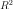 and adjusted
- p-value of the Fisher test
- normality tests on residuals (Kolmogorov-Smirnov, Anderson-Darling and
 )
)
Note: Student test uses standardized residuals
Graphical diagnostics¶
Several plots are provided by LinearModelAnalysis class, see diagram class.
drawResidualsVsFitted()plots standardized residuals 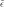 vs. fitted values, withdrawQQplot()plots vs. theoretical quantiles.
vs. theoretical quantiles.drawScaleLocation()plots 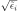 vs. fitted values.drawCookDistance()plots an histogram of Cook’s distance
drawResidualsVsLeverages()plots standardized residuals vs leveragesMoreover, this plot also contains contour plot of function
for levels 0.5 and 1.
drawCookVsLeverages()plots Cook’s distance vs 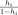.Moreover, this plot also contains isolines of function
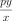
Stepwise regression methods¶
The stepwise regression method consists in choosing the best predictive variables by an automatic procedure according to a selected model criterion (Akaike information criterion (AIC), Bayesian information criterion (BIC)). We define the sets of variables indices . Let us consider a set of variables indices and the cardinal of , the (AIC) and (BIC) criteria are:
- (AIC):
- (BIC): .
Using equation (2) we get:
and
,
where the constant is defined by .
However for model comparisons, only differences in AIC (or BIC) criterion are meaningful,
consequently the constant can be ignored, which conveniently allows us to
take as in R step method:
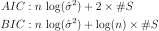
There are three different algorithms: by using forward selection, backward selection, or both.
Forward selection¶
This method starts with initial variables in the model (defined by the set of indices  ), testing the addition of each variable
using a chosen model comparison criterion, adding the variable (if any) that improves the model the most, and repeating this process until none improves the model.
We define the matrix composed by matrix and column: .
We define the vector of size and the scalar by:
), testing the addition of each variable
using a chosen model comparison criterion, adding the variable (if any) that improves the model the most, and repeating this process until none improves the model.
We define the matrix composed by matrix and column: .
We define the vector of size and the scalar by:
We define  the projection matrix by:
the projection matrix by:
(3)¶
The Forward selection algorithm looks like this:
- Input: , , ,
- Initialization: ,
- We compute
- While ()
- We compute where
- if (), then set and
- else quit
Note that using equation (2), we have:
Consequently to find the best variable to add we can consider the least square of the residual term  .
.
Backward selection¶
This method starts with all candidate variables
(defined by the set of indices ), testing the deletion of each variable using a chosen model comparison criterion,
deleting the variable (if any) that improves the model the most by being deleted, and repeating this process until no further improvement is possible.
We define the matrix composed by matrix without the column.
We define the vector of size and the scalar by:

We define the projection matrix by:
(4)¶
The Backward selection algorithm looks like this:
- Input: , , ,
- Initialization: , We compute
- While ()
- We compute where
- if (
 ), then set
and
), then set
and - else quit
Using equation (2), we have:
Consequently to find the best variable to delete we can consider the least square of the residual term .
Bidirectional selection¶
This method is a combination of the Forward and Backward selection. At each step, this method tests the addition (Forward selection) and the deletion (Backward selection) of each variable using a chosen model comparison criterion, select the method that improves the model the most, and repeat this process.
The Bidirectional selection algorithm is the following:
- Input: , , , ,
- Initialization: , We compute
- While ()
- We compute where
- We compute where
- if () or (),
- if (), set and
- else set and
- else quit
Using equation (2), we have:
Consequently to find the best variable to add (resp. to delete), we can consider the least square of the residual term (resp. ).

LinearModelStepwiseAlgorithm class
Detailed implementation¶
Each selection method requires to find an index which minimizes some residual norm. In this section, we explain how computations can be performed very efficiently, by minimizing the number of operations.
QR decomposition of matrix ¶
Note that in practice and consequently we do not want to compute
the projection matrix of size .
We also do not have to compute the inverse Gram matrix of of size , all we need
is to solve linear systems.
Since matrix has full rank, it can be written as a product
of a matrix of size having orthogonal columns and an upper triangular matrix
of size with positive diagonal matrices.
Using the thin QR decomposition of matrix we obtain:

Forward selection¶
It can be shown that the inverse Gram matrix of of size can be represented by a block partition
Then the projection matrix defined by equation (3) turns into:
We get the residual term:
(5)¶
Implementation using QR decomposition¶
- The vector of size does not depend on the column to add. The computation of this vector is done by two matrix-vector products.
- The vector of size depends on the column to add. The computation of this vector is done by two matrix-vector products.
Backward selection¶
The projection matrix defined by equation (ref{Hm}) turns into:
(6)¶
where represents the matrix  without row and column ,
represents the column of the matrix without row and represents the diagonal term of the matrix .
without row and column ,
represents the column of the matrix without row and represents the diagonal term of the matrix .
In order to avoid matrix copies, we want to use the matrix in the equation
(6) without creating matrices .
To this end, we define a matrix whose column contains only ,
and we note a copy of which has
its -th row equals to .
We get:
(7)¶
Using equation (7), the projection matrix defined by equation (4) turns into:
Using equation (7), we get the residual term:
(8)¶![Y-H_{-i}\,Y & = Y-\,X_{i=0}\,A_X\,X_{i=0}^T\,Y \,+\,\frac {1}{A_{i,i}}\, \big(X_{i=0}\,A_{,i}\,(A_{i,} X_{i=0}^T\,Y)\,\big)\\
& = Y-\,X\,\big[\,A_X\,\big[X^T\,Y\big]_{i=0}\,\big]_{i=0} \,+\,\frac {1}{A_{i,i}}\, \big( X\,\big[\,A_{,i}\,\big]_{i=0}\,\,(A_{i,} \,\big[X^T\,Y\big]_{i=0})\,\big)\\
& = Y-\,X\,\big[\,A_X\,\big[X^T\,Y\big]_{i=0}\, -\,\frac {A_{i,} \,\big[X^T\,Y\big]_{i=0}}{A_{i,i}}\,A_{,i}\,\big]_{i=0}\\
& = Y-\,X\,\big(\,A_X\,\big[X^T\,Y\big]_{i=0}\, -\,\frac {A_{i,} \,\big[X^T\,Y\big]_{i=0}}{A_{i,i}}\,A_{,i}\,\big)](../../_images/math/c0cf3ebd1bcff3a4773bfa757fad0c091130ca91.svg)
Then we rewrite the residual term equation (8) using the vector of size with a 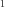 in the coordinates and elsewhere. We obtain:
(9)¶
Implementation using QR decomposition¶
- The vector of size does not depend on the column to delete. The computation of this vector is done by two matrix-vector products.
- The vector of size depends on the column to delete.
The computation of this vector is done by two matrix-vector products:
- First we compute the vector of size : .
- Then we compute the vector of size : .
- The scalar depends on the column to delete. The computation of this scalar is done by 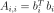 .
Stepwise regression algorithms¶
- Input: , , , ,
- Initialization: , , , ,
- While ()
- We compute using
computeLogLikelihood()which computes the QR decomposition of matrix:
and update , and
. - Initialization: ,
- If (), then set and
- If (), then set and
- If ( or ), then
- if (), set
- else set
- Set
- else quit
- We compute using
- We update , ,
using
computeLogLikelihood() - We compute the vectors:
 and
and
- We compute the vectors:
![\big(H_{i,i}\big)_{i \in [1,n]} = \big(\,\|Q_X^{T}\,e_i\|^2\,\big)_{i \in [1,n]}](../../_images/math/3e60441473e0c3c536d018947374be1d240e85fc.svg) and
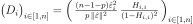
and
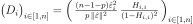 - We construct an instance of
LinearModelResultwith parameters: .
ComputeUpdateForward algorithm¶
The function computeUpdateForward computes the least square of the residual term  using equation (5):
using equation (5):
- Input: , matrix , matrix , vector 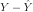
- Initialisation:
- For (), do
- We compute the vector
- We compute the vector
- We compute the scalar:
- If (), set 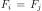 and
- Return
 and
and
ComputeUpdateBackward algorithm¶
The function ComputeUpdateBackward computes the least square of the residual term using equation (9):
- Input: ,
matrix ,
vector ,
vector
matrix ,
matrix 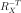,
- Initialisation:
- For (), do
- We compute the vector
- We compute the vector
- We compute the vector
- We compute the scalar:
- If (), set and
- Return and
Perspectives¶
- Integration into OpenTURNS
- classes
LinearModelandLinearModelFactoryshould be fully dropped - Tensorization: This module adds the
MonomialFactoryclass to help creating basis of monomials. OpenTURNS implements polynomial tensorization for orthogonal basis. For this reason,MonomialFactoryinherits fromOrthogonalUniVariatePolynomialFactory. But this is wrong, since monomials do not form an orthogonal basis; polynomial tensorization should be modified to also generate non-orthogonal basis. - Class
LinearModelAlgorithmcurrently callsLinearModelStepwiseAlgorithmto build the linear model. This is to avoid code duplication when creating aLinearModelResult, but this should be fixed. - Drop rot package
- classes
- Extensions
- Extend
LinearModelAnalysisto acceptFunctionalChaosResultas argument. - Input normalization: At the moment, inputs are normalized after applying basis’ functions. To improve robustness, it would be better to normalize input before applying basis’ functions. But in fact, data should be normalized before performing linear regression.
- Multivariate output: stepwise selection is currently implemented only when output is 1D.
- Singular Value Decomposition: algorithm currently uses a QR-decomposition of input sample. By using a singular value decomposition, maybe some post-processing computations (like leverages) could be easier to compute.
- Instead of optimal trend coefficients, maybe we could return their law.
- Extend use of the stepwise method for generalized linear models.
- Sensitivity analysis: standard regression coefficients are currently defined in
CorrelationAnalysis_SRC. An improvement is to rely onLinearModelResultin a new post-processing. - Extend
BoxCoxFactoryto accept aLinearModelAlgorithm, as is done withGeneralizedLinearModelResult. - Rework
TestResult, it currently uses either pValue or (1-pValue). - Improve validation. We could not validate by comparing with R
stepmethod because it filters variables: it would acceptX1*X2only afterX1andX2belong to the model. According to literature, this is called the principle of marginality. Moreover, there are cases where it switches variables, sayX2*X1, and it afterwards reject it because it did not matchX1*X2.
- Extend